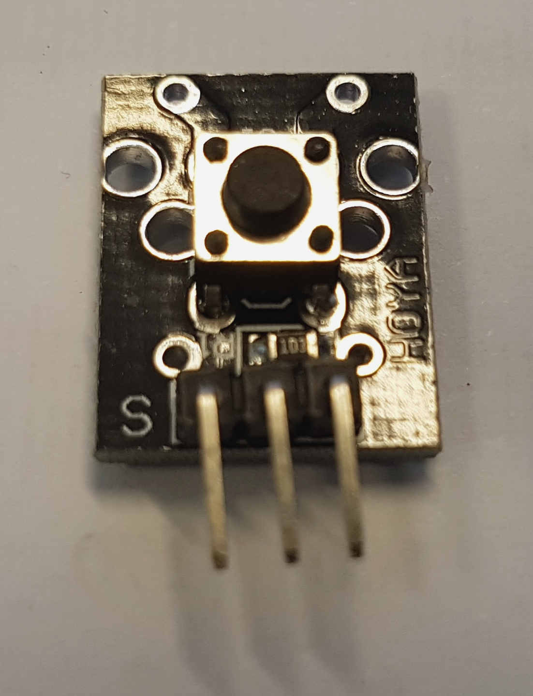
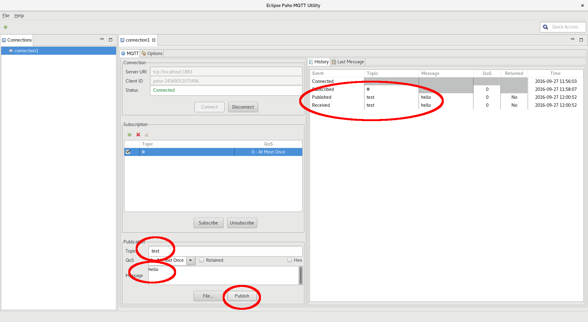

Exercise 1 - Lighting an LED
Computers process binary data, a series of bits representing true
and false. When interacting with the real world, modern computers
generally represent this as a high and low voltage. In particular, with
the ESP8266, true is ~3.3V, and false is around 0V.
In this exercise, we will set up your board so you can turn an
LED on and off. We will be working with a breadboard, the ESP8266
module, and the RGB LED module.
Breadboards have internal wiring which make it easy to prototype
electronic circuits on them. The breadboard diagram adjacent shows the
typical internal connections (your board may vary slightly). There are
horizontal busbars for distributing power, and smaller vertical strips
in the middle for connecting devices.
- Plug your ESP8266 module into the breadboard, across the
centre connectors, on the left hand side, with the USB connector
pointing left. If your breadboard is brand new, it may be a little
stiff, so be careful not to bend the pins. It may help to wiggle it
back and forth to allow the pins to settle. The top pins should be in
row B, and the bottom pins in row I.
- Plug your RGB LED module to the right of the ESP8266, in the
top half of the board, with the LED facing you. It doesn't matter
which column it is installed in, just make sure it is horizontal so
that the pins are not shorted.
- Plug a black jumper wire from the G port on the ESP8266 to the
leftmost pin of the top (-) black/blue busbar. This provides ground to
the top busbar, which we will use to connect other devices to. Note
that on the workshop breadboard, the busbar only extends half the
length of the board.
- Plug a red jumper wire from the 3v3 port on the ESP8266 to the
top (+) red busbar. This will provide power to our devices later.
- Now that the busbars are connected to the ESP, we can connect
our devices. Look on the board of the LED where you should see that
each of the legs are labelled. Find which column the negative (-) leg
is plugged in to, and connect this column to the (-) busbar with a
black jumper wire.
- Plug red, green and blue wires from D3, D4 & D5 on the
ESP8266 to the R, G & B pins on the LED.
- Double-check the connections on your board, it should look
like the image to the right.
- Plug the ESP8266 into the computer via the USB port. This
should be done before the next step so that the serial port can be
detected.
- Launch ESPlorer (Windows: run:
esplorer.bat
Linux: run java -jar ESPlorer.jar)
- Connect to the ESP8266: select the correct serial port, set
the speed to 115200, hit "Open". You should see the something like the
window below, with a '> ' prompt. If not, you can press the reset
button on the ESP8266 to restart it. Don't worry if you see a message
saying "cannot open init.lua" - this is normal.
- In the bottom right panel (left of the "Send" button), enter
the following, hitting "Send" after each line
- red=3
- green=4
- blue=5
- gpio.mode(red, gpio.OUTPUT) -- (this sets the pin denoted by
the led variable to be an output)
- gpio.mode(green, gpio.OUTPUT)
- gpio.mode(blue, gpio.OUTPUT)
- gpio.write(red, gpio.LOW) -- (the led should turn off)
- gpio.write(green, gpio.LOW)
- gpio.write(blue, gpio.LOW)
- gpio.write(red, gpio.HIGH) -- (the led should turn on)
- What happened? Why do you think that happened? How could you
fix it without changing the software?
- How do you get the other colours to light?
References
Exercise 2 - Dimming the LED
Turning the LEDs on and off is great start, but for an RGB LED to be
truly useful, you need to be able to dim them so you can effectively
mix the colours. Unfortunately, most I/O lines on modern computers
cannot output an analog signal. Instead, we can take advantage of a
property of our eyes where our perception of the brightness is
proportional to the amount of energy it emits over a short period of
time. To do this, we flash the LED quickly, and vary the ratio between
the amount of time it spends on and off. This technique is known as Pulse
Width Modulation (PWM).
- Enter the following:
- pwm.setup(red, 1000, 1023)
- pwm.start(red) -- (the LED should turn on)
- pwm.setduty(red, 0) -- (the LED should turn off)
- pwm.setduty(red, 511) -- (the LED should be dimmer)
- How do you set the brightness to 25% and 75% brightness? What
is your perception of those brightnesses?
- Can you mix colours to get cyan, magenta and yellow?
- How do you get white?
References
Exercise 3 - Reading a switch

As well as being able to output data, computers can read data in
from their I/O lines. We can force a line to 0V by pulling it to ground
with a switch, but what happens when the switch is not engaged? The I/O
line is left floating, and will give random readings, which will result
in the switch being falsely triggered. To correct this, the module adds
a resistor to the 3.3V, so that when the switch is not pressed, the
line reads true.
- Insert the switch into the breadboard, alongside the LED
- Connect - on the switch to the (-) busbar using a black wire
- Connect the middle pin to the (+) busbar using a red wire
- Connect S on the switch to D1 on the ESP8266 with a coloured
wire
- Enter the following:
- button = 1
- gpio.mode(button, gpio.INPUT, gpio.PULLUP)
- print(gpio.read(button))
- What does it print? Repeat the last command while holding down
the button. What does it print now? Why does it behave like that?
References
Exercise 4 - Event based programming
One modern programming technique is known as "event
based programming". This technique reduces development effort by
allowing the program to respond to certain events when they occur,
instead of repeatedly checking that an event has occurred. As a first
step, let's respond to a button press.
- Press "Open" in the top left, then select "buttontest.lua"
- Press the "Save to ESP" button at the bottom, the program
should be uploaded to the ESP8266 and run automatically
- Press the button you plugged in, what happened? Why did it
behave like this?
- Read the gpio.trig
documentation, can you alter the program to only send a message when
the button is pressed?
- Do you sometimes see the same message come through multiple
times when the button is pressed? This is called "bouncing", and is an
artifact of the switch mechanism. Later exercises will deal with this
in software.
References
Exercise 5 - Toggling an LED
In home automation, we often want to toggle the state of
something every time a switch is pressed. To do this, we need to keep
track of the current state so we can decide what the next state is.
- Open & save "button-led.lua"
- What happens when you press the button? Why does it behave
like this?
- Can you change the program to toggle between red and blue?
Exercise 6 - Making noise
Audio feedback is often useful to let the user know that an
action has been performed or an input accepted. Let's add a buzzer to
the project so we can make some noise. There are 2 buzzers in the
project, an active one which produces a single tone (which is just
on/off, like an LED) and a passive one, which can produce different
tones. We want the passive one. To identify which one is the passive
one, connect (-) on the buzzer to ground, and S to 3.3V. The passive
buzzer will click, while the active buzzer will sound a tone.
- Add the buzzer to the breadboard, alongside the switch
- Connect a black wire from - on the buzzer to the (-) busbar
- Connect a coloured wire from S on the buzzer to D8 on the
ESP8266
- Open & save "button-buzzer.lua"
- What happens when you press the button?
- Read the documentation for tmr.delay
and pwm.setup,
can you change the pitch and duration of the tone?
References
Exercise 7 - Getting connected
Congratulations! If you've made it this far, you have learnt
enough to work with the bulk of the modules in your kit. Now, the real
power of the ESP8266 is that it can connect to Wifi networks, and
interact with other computers.
First, let's see what wifi networks are around.
- Open & save "wifi-list.lua"
- After a few seconds, it should list which networks are
available, write down the one you should be using (ask your instructor
if you are unsure)
- Open "settings.lua", and update the SSID with the one you
identified previously, then save it to the ESP8266
- Open, save and run "wifi-connect.lua"
- After a few seconds, it should report that it has connected
Now, let's start up the Mosquitto server. Mosquitto implements
the MQTT message passing protocol, which allows computers to share
messages without requiring knowledge of the source of destination. This
server will allow us to bring together many modules and allow them to
interact without requiring them to know about each other. Messages are
communicated on topics, so every message that is sent must specify a
topic. To receive messages, we need to tell the server which topics we
want to listen for.
- On Windows, doubleclick on
esp-workshop\windows_x64\mosquitto\mosquitto.exe (this will start a
black window), on Linux, in a new shell, type mosquitto
- On Windows, doubleclick on
esp-workshop\windows_x64\paho.exe,
on Linux, run esp-workshop/linux_x64/paho
- Create a new connection by hitting the green + in the top left
(the default connection settings should work)
- Hit connect, the log in the right should say "Connected"
- Create a subscription by hitting the green '+' under
Subscriptions, then enter '#' as the topic (this shows all messages)
- Hit the 'Subscribe' button, the log should show "Subscribed #"
- Publish a test message with the topic "test" and the message
"hello", the log should the message being published and received

- Identify the IP address of your computer:
- In a shell/command prompt, for Windows, run
ipconfig /all,
for Linux, run ifconfig -a
- Write down the IP address of the network interface you are
using for the workshop (probably a wireless interface, wlXXX in
Linux)
- Edit settings.lua and enter the IP address for
mqttServerAddress (replace xx.xx.xx.xx)
- Open & save "hello-mqtt.lua"
- You should see a new received message from the ESP8266
- Can you change the topic and message that the device sends?
References
Exercise 8 - Sending a message on button press
Now that you know how to send messages, let's use what we learnt
earlier to tie the button presses with message sending. Here, we have
added the button press code, but only activate it once the MQTT session
is connected. Instead of lighting an LED, the button callback now sends
a message to the server.
Observe that in this example, we use the MAC address (physical
unique network address) of the Wifi interface as a unique identifier.
This way, we can have multiple modules speaking to the same server, and
we can tell which one sent the message.
- Open & save "mqtt-button.lua"
- Press the button and observe the messages received in Paho
Exercise 9 - Receiving messages
Here, we build on top of the previous exercise by subscribing to
a test message.
- Open & save "mqtt-subscribe.lua"
- Try publishing messages to the "test" topic via Paho. What
happens on the remote node?
- Now try using the topic that the ESP8266 said it was listening
on. Now what happened?
Exercise 10 - Switching an LED based on received messages
Let's now add to the previous exercise by switching the blue LED
based on incoming messages. Again, we use the MAC address to uniquely
identify our device.
- Open & save "mqtt-led.lua"
- Look at the function "setBlueLED", what values can you send
for the message? What can you do with the LED?
- Turn the LED on using the Paho client and what you have
figured out from the previous step
- Can you expand the program to work with the red and green LEDs
too?
References
Exercise 11 - Sounding the buzzer based on received messages
Let's bring in the last bit of hardware now by enabling the
buzzer.
- Open & save "mqtt-buzzer.lua"
- Look at the function fireBuzzer and the documentation for string.match,
how do make the buzzer sound?
- Turn an LED to 50%, and sound the buzzer with a low frequency.
What happens to the LED? Read the pwm.setclock
documentation, can you explain why this happens?
Exercise 12 - Coordinating interaction with NodeRed
We're done with the device programming for now, instead, we're
going to use NodeRed to coordinate the interactions. First, let's use
NodeRed to toggle our LED when our button is pressed.
- Windows: From a Node-JS Command Prompt, run
node-red Linux: Run
node-red, then
point the FireFox web browser at http://localhost:1880
- Drag an Input MQTT node from the left panel to the current
flow in the centre
- Double click on the new node, then add a new server
- Set the hostname to 'localhost' and click Add
- Set the topic to the button topic from your device, the QoS to
0, and the name to "Button"
- Drag on output/debug node from the left panel, and drag a
connection from the button to the new debug node
- Press Deploy and wait for the "Successfully deployed" message.
You should see a "Connected" message below the button
- Select the Debug tab on the right panel
- Press the button on your device, you should see messages
appear as you press and release the button
- Drag an output MQTT node into the flow, Set the topic to your
blue LED
- Connect the new node to your button
- Deploy your changes
- Press the button on your device, what happens?
Exercise 13 - Toggling with NodeRed
- Drag in a function node, Name it "Toggle" and add the
following
- Connect the toggle between the button and the blue LED
- Connect the debug module to the toggle output
- Press the button on your devices, what happens with the debug
output and the LED
Exercise 14 - Multiple device interaction
The power of these devices is unleashed when you have many
devices in the network, and they can interact.
- Form small groups, and nominate one laptop to be the MQTT
server for the group
- Update settings.lua on all the nodes to specify the IP address
of that server
- Rerun mqtt-buzzer.lua on all the nodes to ensure the latest
settings are used
- Identify the address of someone else's node in your group,
alter the flow in NodeRed so that your button controls their LED
- Try expanding your device to use different sensors from the
kit. How would you connect them? Does the code on the device have to
be changed to support it? What changes in NodeRed do you have to make
to read different sensors?
Resources
{kind=link}
{kind=link}
{kind=link}
{kind=link}
{kind=link}
{kind=link}
{kind=link}
{kind=link}
{kind=link}
{kind=link}
{kind=link}
{kind=link}
{kind=link}
{kind=link}
{kind=link}